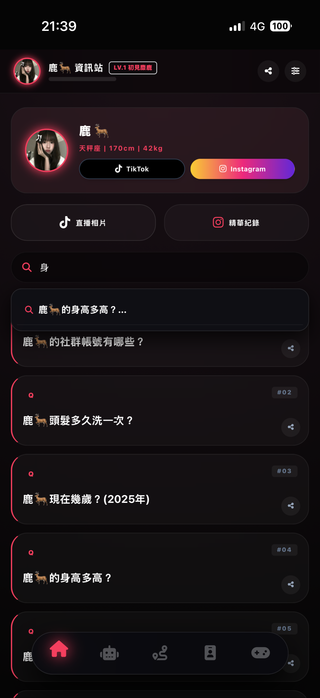
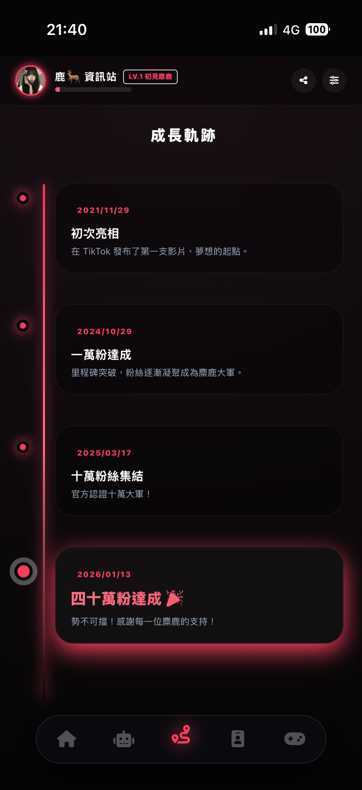
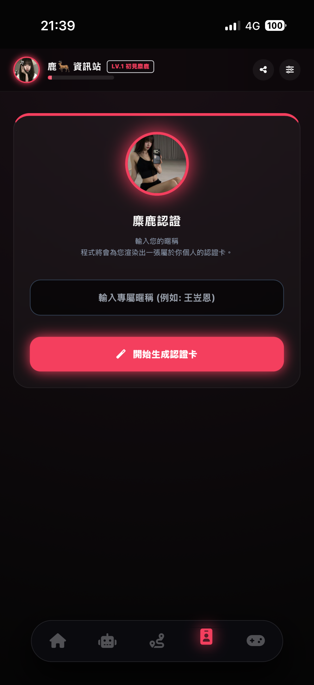
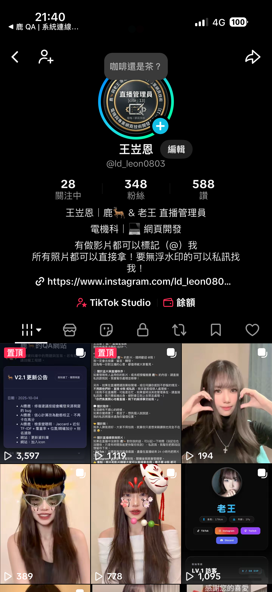
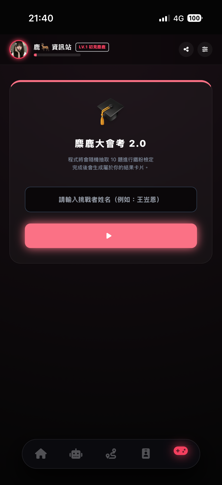

PROJECT_ID: DEER_PWA
鹿🦌的粉絲網站
以「手機優先 (Mobile-First)」為核心設計理念，這是一個為鹿🦌的粉絲量身打造的沉浸式 PWA 網站。將複雜的直播規則、常見問題與粉絲應援內容進行模組化整合，提供媲美原生 App 的流暢體驗。

/ CORE_FEATURES
系統核心亮點
01
動態 Q&A 檢索系統
設計了直覺的搜尋介面，讓粉絲能透過關鍵字快速查詢與主播相關資訊，大幅降低管理員在直播中重複回答問題的負擔。

02
專屬成長軌跡
完整記錄鹿🦌從初期到現在的每一個重要里程碑。透過視覺化的精美時間軸，讓粉絲一起見證主播的成長與感動。

03
數位粉絲認證卡
透過程式碼渲染出專屬的粉絲數位認證卡片，增強社群成員的歸屬感，並提供極佳的視覺美感，方便粉絲在社群媒體上分享截圖。

04
精華紀錄與應援
專屬的精華紀錄區塊，完美整合外部資源。讓粉絲能夠快速連結到管理員的帳號，查看精華剪輯與高畫質的直播美照。

05
麋鹿大會考
精心設計的專屬互動測驗模組，考驗粉絲對鹿🦌的了解程度。透過趣味的問答機制，加深社群凝聚力與粉絲的參與感。
